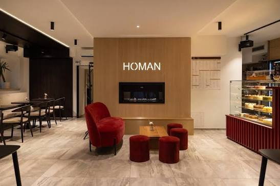
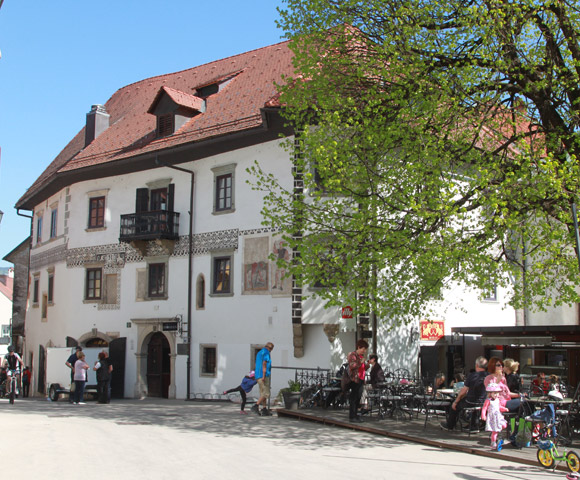

Skozi to hišo je tekla zgodovina Loke. Danes skozi njo teče kava.
Homanova hiša stoji na čelu mestnega trga že od srednjega veka, družina Homan pa jo od leta 1820 polni z vonjem sveže pečenega kruha in kave. Nekoč so tu sedeli Ivan Grohar, Ivan Tavčar in loška meščanska elita — danes so vrata odprta prav vsem.

Hiša, ki jo je slikal Grohar
Meščanski dvorec na čelu Mestnega trga je zgrajen v gotskem slogu, s poznejšimi renesančnimi dodatki. Tu je Ivan Grohar naslikal svojo znano sliko »Loka v snegu«, med gosti nekdanje gostilne pa so bili tudi pisatelj Ivan Tavčar, poslanec Lovro Toman in slikar Janez Šubic — vsi del loške meščanske elite 19. stoletja.
Pod štirinajstimi plastmi ometa so v notranjosti odkrili fresko iz časov beneške slikarske šole. Leta 1934 so ob smrti kralja Aleksandra pred hišo zasadili lipo, ki je od takrat zaščitni znak kavarne.

Grajska torta
Naša najbolj priljubljena sladica — recept, ki se je prenašal skozi generacije slaščičark, od Ane Guzelj do Barbare, ki je v hiši prva odprla slaščičarsko dejavnost.
Odkrij ponudbo sladicKratka zgodovina hiše
Od škofovske posesti do družinske kavarne — štiri postaje, ki so oblikovale hišo, kakršno poznamo danes.
Vsak dan znova vredna postanka.
Odprto vse dni v tednu, na čelu Mestnega trga v Škofji Loki.
Rezerviraj mizo